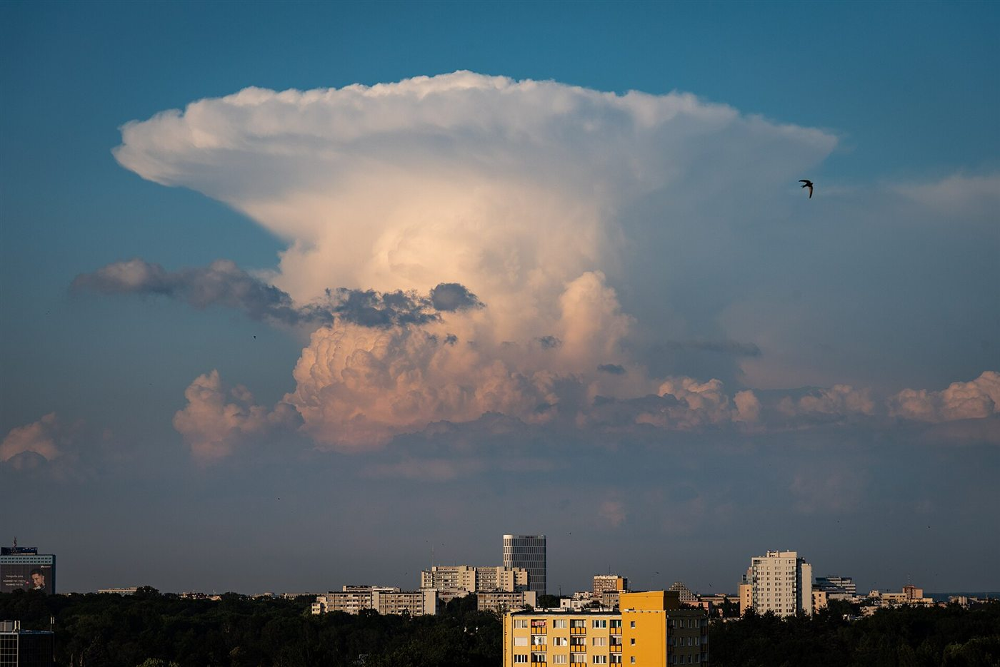

Gradiente adiabático, nubes de tormenta y frecuencia de Brunt-Väisälä
Una mañana de verano sin una nube puede terminar con una tormenta enorme. Otro día, con la misma temperatura, el cielo sigue limpio. La diferencia no está en cuánto calor hace, sino en cómo cambia la temperatura con la altura. De eso depende que una burbuja de aire, una vez empujada hacia arriba, siga subiendo sola o vuelva a su lugar.
Una parcela de aire que asciende encuentra menos presión, se expande y se enfría; si desciende, se calienta [1][2]. Ese proceso se considera adiabático porque la parcela prácticamente no intercambia calor con su alrededor. Hay que comparar tres ritmos, llamados gradientes [2]:
El gradiente adiabático seco, de 9,8 °C por kilómetro [3]: el enfriamiento de una parcela sin condensación.
El gradiente adiabático húmedo, de alrededor de 6 °C por kilómetro [3]: una parcela saturada se enfría más despacio, porque la condensación del vapor libera calor [2].
El gradiente ambiental: lo que la temperatura del aire circundante realmente baja con la altura [2].
La clave es la flotación. Si la parcela queda más caliente que su entorno, es más liviana y sigue subiendo. Si queda más fría, vuelve a bajar. Por eso, comparando el gradiente ambiental Γ con los otros dos [2][3]:
Absolutamente estable: Γ menor que el gradiente húmedo. Cualquier parcela desplazada queda más fría que el entorno y vuelve.
Absolutamente inestable: Γ mayor que el gradiente seco. La parcela queda siempre más caliente y sigue subiendo.
Condicionalmente inestable: Γ entre los dos. La parcela seca es estable, pero si se satura, se vuelve inestable. Es el caso típico de los días de tormenta: el aire necesita un empujón inicial hasta condensar y volverse flotante. El Centro de Predicción de Tormentas de la NOAA considera estables los valores cercanos al suelo menores que 5,5 a 6 °C/km y absolutamente inestables los mayores que 9,8 °C/km [4].
La bolita en la mesa: una bolita en el fondo de un bol vuelve si la empujás: eso es estabilidad. Sobre una pelota, se cae con cualquier toque: inestabilidad. La inestabilidad condicional es una bolita en un pocito sobre una loma: hay que subirla un poco, pero pasado el borde, cae sola.
El aire levantado alcanza primero el nivel donde condensa y después el nivel de convección libre, donde su temperatura supera por primera vez a la del entorno y empieza a flotar [2]. Pasado ese nivel, puede formar una tormenta [2].
La energía disponible se mide con la CAPE, la energía potencial convectiva disponible, que suma la flotación de la parcela a lo largo de su ascenso [1]:
P. Markowski e Y. Richardson dan un ejemplo con 3458 J/kg, que produciría corrientes ascendentes de 83 m/s, unos 300 km/h, aunque las tormentas comunes quedan bien por debajo de ese límite [1]. En el centro de Argentina, un estudio de la campaña RELAMPAGO midió unos 2900 J/kg antes de una supercelda [5].

¿Qué pasa con una parcela en aire estable? Si la empujás, vuelve, se pasa de largo y oscila, como un corcho en el agua. Es la misma física de las ondas internas, cuya frecuencia natural se llama de Brunt-Väisälä [6]. Para el aire se puede escribir así (un cálculo propio a partir de la flotación de la parcela):
Con T = 280 K y Γ = 6,5 °C/km, N ≈ 0,011 s⁻¹, y el período es de unos 10 minutos (un cálculo propio). Si Γ supera a Γd, N² se vuelve negativo: en lugar de oscilar, la parcela se aleja exponencialmente. Eso es la inestabilidad, y su versión de laboratorio es la convección de Rayleigh-Bénard.
La atmósfera es estable o inestable según cómo baje la temperatura con la altura, comparada con cómo se enfría el aire que sube. La condensación cambia las reglas: el aire que al principio se resiste a subir puede volverse flotante en cuanto satura. La CAPE mide cuánta energía queda disponible, y por eso los meteorólogos miran los perfiles de temperatura, y no solo el termómetro de la calle.
Pregunta para la comunidad: Por la tarde, el sol calienta el suelo. ¿Cómo cambia eso el gradiente ambiental en los primeros kilómetros? ¿Por qué tantas tormentas de verano aparecen a la tarde y no a la mañana?